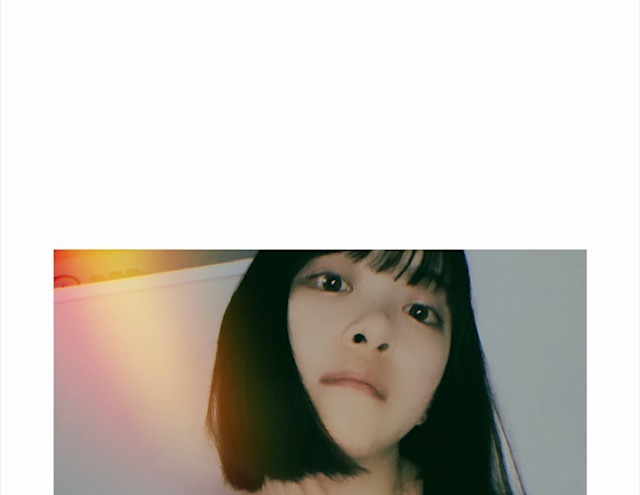
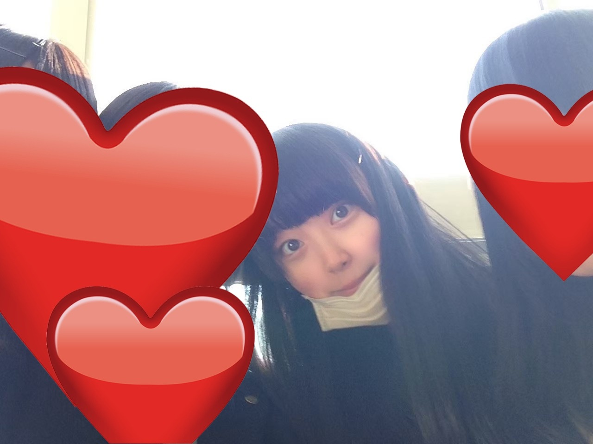
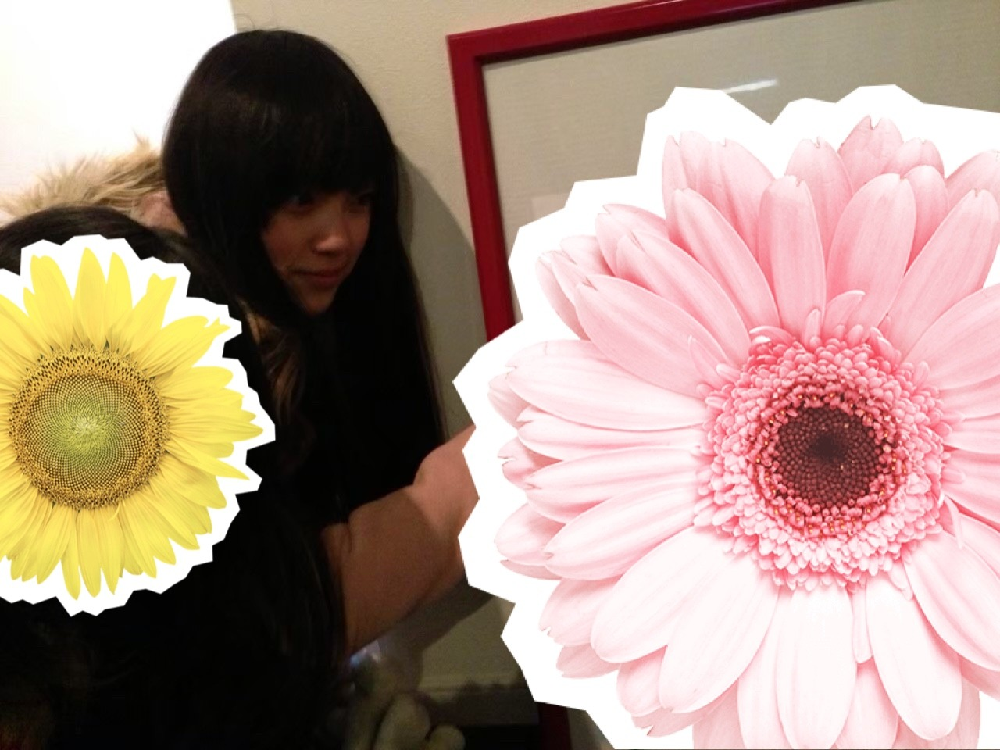
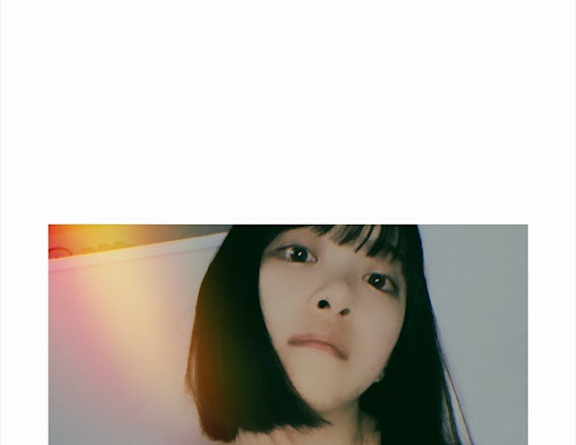
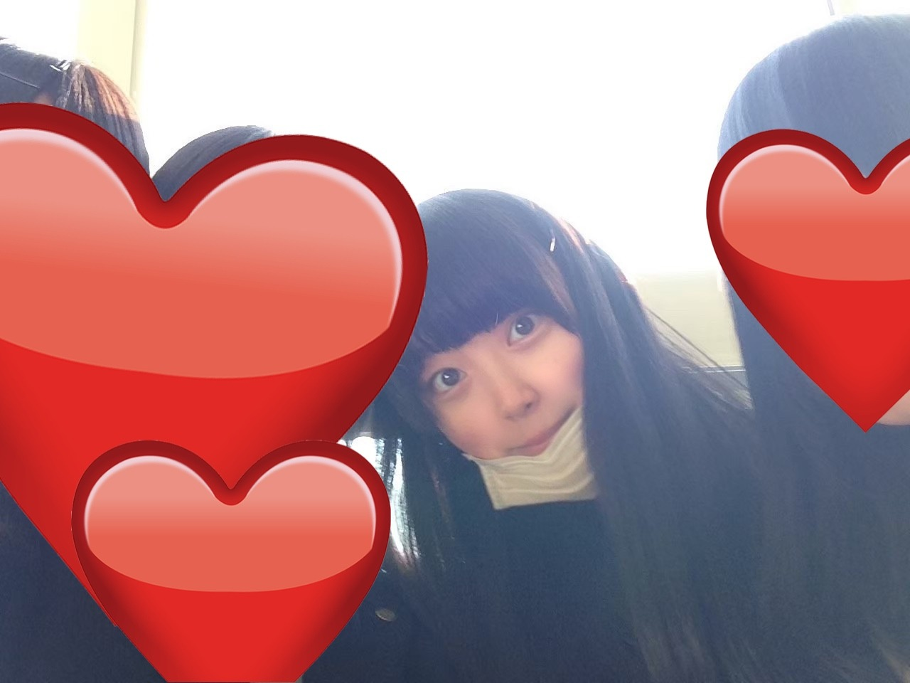
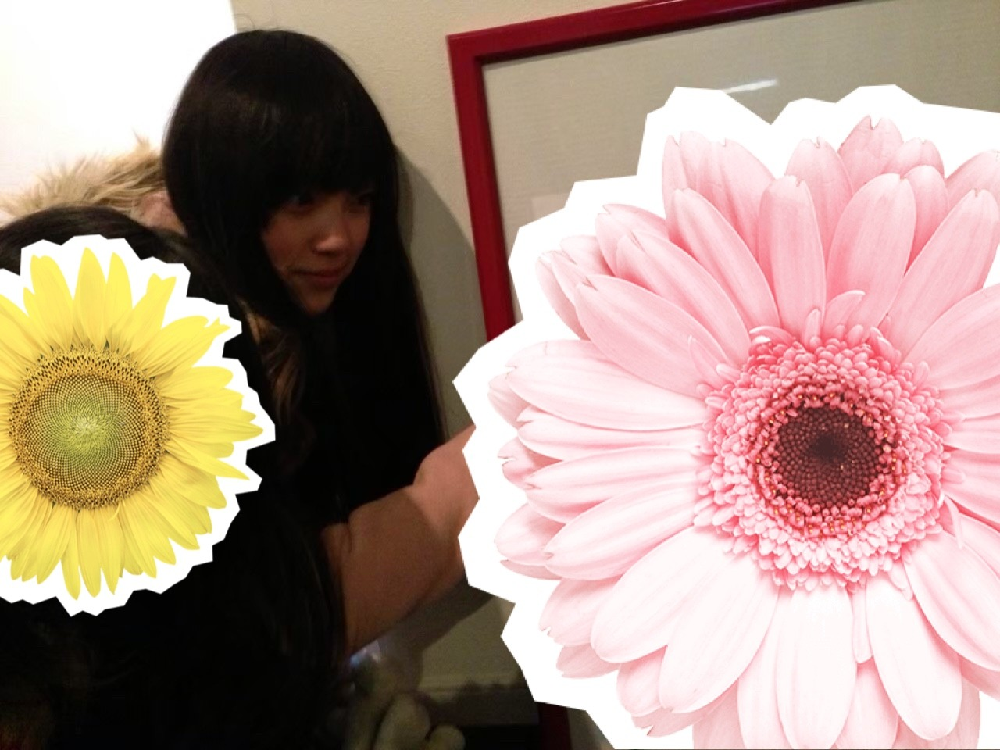

2020/0605Fri#未央奈との待ち合わせ場所 教えてください

今日のみおなさん。
未央奈、唇と鼻を触る癖がある
話すインコを飼いたい
シリシリをつくる
の3本です。

学生時代の写真を
親友が送ってくれましたーー
懐かしい！
みんな元気かな？
Say yes 元気かな？
(ANN聞いてくださった方はご存知のはず)


ほとんどの写真で変顔をしてたので
これくらいしかまともじゃなかったです。笑
この時はまだメイクもしたことなかったなー
私が東京に行くってなった時
高校の友達がお好み焼き屋さんに
みんなで連れてってくれました(^.^)
当時はバイトして通学して...の
なんてことない毎日だと思っていたけど
今思うと高校や中3の友達にはすごく
恵まれていて私は常に友達と
変なことしかしてなかったけど笑
それがすごく青春だったなーって思います
乃木坂の活動もいつか、
あー青春だったなーって
振りかえるときがくるのかな？
あの時は楽しかったなって思えたらいいな...
頑張ります！

友達との待ち合わせ場所があの時のあの場所
だとしたら
みなさんとの"待ち合わせ場所"は一体どこなんだろう
って最近考えています
私との待ち合わせ場所
はどこがいいですか？
きっと1人1人違いますよね☺︎
#未央奈との待ち合わせ場所
#いつかの待ち合わせ場所
で、教えてください☺︎
代々木体育館はバレッタのサプライズ選抜発表をした場所
武道館は初めてセンターとして立たせていただいた場所
幕張メッセは初めて握手会のミニライブに出させていただいた場所
...
他にも
私を見つけてくださった場所や
思い入れのある場所は皆さん違うと思います。
もしかしたらmステかもしれないし
◯◯っていう雑誌かもしれない
好きになったきっかけの場所で
またみなさんと待ち合わられるように
私、がんばりたいです。
教えてください♩
では！
今日のみおなさん。
未央奈、唇と鼻を触る癖がある
話すインコを飼いたい
シリシリをつくる
の3本です。

学生時代の写真を
親友が送ってくれましたーー
懐かしい！
みんな元気かな？
Say yes 元気かな？
(ANN聞いてくださった方はご存知のはず)


ほとんどの写真で変顔をしてたので
これくらいしかまともじゃなかったです。笑
この時はまだメイクもしたことなかったなー
私が東京に行くってなった時
高校の友達がお好み焼き屋さんに
みんなで連れてってくれました(^.^)
当時はバイトして通学して...の
なんてことない毎日だと思っていたけど
今思うと高校や中3の友達にはすごく
恵まれていて私は常に友達と
変なことしかしてなかったけど笑
それがすごく青春だったなーって思います
乃木坂の活動もいつか、
あー青春だったなーって
振りかえるときがくるのかな？
あの時は楽しかったなって思えたらいいな...
頑張ります！
友達との待ち合わせ場所があの時のあの場所
だとしたら
みなさんとの"待ち合わせ場所"は一体どこなんだろう
って最近考えています
私との待ち合わせ場所
はどこがいいですか？
きっと1人1人違いますよね☺︎
#未央奈との待ち合わせ場所
#いつかの待ち合わせ場所
で、教えてください☺︎
代々木体育館はバレッタのサプライズ選抜発表をした場所
武道館は初めてセンターとして立たせていただいた場所
幕張メッセは初めて握手会のミニライブに出させていただいた場所
...
他にも
私を見つけてくださった場所や
思い入れのある場所は皆さん違うと思います。
もしかしたらmステかもしれないし
◯◯っていう雑誌かもしれない
好きになったきっかけの場所で
またみなさんと待ち合わられるように
私、がんばりたいです。
教えてください♩
では！
2020/06/05 16:48
コメント(417)
ブログ更新お疲れさま～
サザエさんやんーーー(笑)
神宮球場か、学校で未央奈さんと会いたいなー(笑)
好きになったきっかけは、乃木坂工事中とか、歌番組とか見てるときに、可愛い子いるなーって思って調べたら未央奈さんだった(o^∀^o)
いつか会えるようにガンバロウーーq(^-^q)
では、次のブログ更新で！バイバイ～(o^∀^o)
サザエさんやんーーー(笑)
神宮球場か、学校で未央奈さんと会いたいなー(笑)
好きになったきっかけは、乃木坂工事中とか、歌番組とか見てるときに、可愛い子いるなーって思って調べたら未央奈さんだった(o^∀^o)
いつか会えるようにガンバロウーーq(^-^q)
では、次のブログ更新で！バイバイ～(o^∀^o)
未央奈一日お疲れ様‼️学生時代からめっちゃ可愛かったんだね‼️また明日も頑張ってね‼️
こんちは
セキセイインコはよく話しかけてあげると
お喋りするようになるよ☺️
待ち合わせ場所
横浜に20年住んでいたから
横浜で待ち合わせなら
JR石川町駅改札口(二ヶ所あるけど山手寄り)
横浜散歩するならここからスタートして
トンネル歩いて左に坂を上り
フェリス女学院前を通り
外人墓地、港の見える丘公園(途中お洒落なカフェ)
横浜の港を眺め
今度は急な坂を下り
横浜元町、山下公園
そしてみなとみらい
そして思い出のパシフィコ横浜
妄想です(^o^;)
では
ブログ更新ありがとう!!
学生時代可愛すぎる!!
そんな可愛い人が同じ学校やったらなぁw
学生時代可愛すぎる!!
そんな可愛い人が同じ学校やったらなぁw
名古屋ドームかな～
こんばんちは(^^)
更新ありがとう♪
♯未央奈との待ち合わせ場所
→乃木中で見てかわいいって思った記憶が…
♯いつかの待ち合わせ場所
→静かなカフェでゆったりと…ですかね？(*´ω｀*)
学生時代の堀ちゃん可愛すぎます♪
この可愛さは反則級…ですorz
クラスにいたら授業どころじゃない‼(笑)
更新ありがとう♪
♯未央奈との待ち合わせ場所
→乃木中で見てかわいいって思った記憶が…
♯いつかの待ち合わせ場所
→静かなカフェでゆったりと…ですかね？(*´ω｀*)
学生時代の堀ちゃん可愛すぎます♪
この可愛さは反則級…ですorz
クラスにいたら授業どころじゃない‼(笑)
暑い！って毎日言ってます！！笑
♯未央奈との待ち合わせ場所
僕は歌番組のジコチューで未央奈がウィンクしたところに惚れた
僕は歌番組のジコチューで未央奈がウィンクしたところに惚れた
ブログ更新ありがとうございます。未央奈さんとの理想の待ち合わせ場所はディズニーか、高級イタリアンレストランとかです。最後はダジャレで、秋田犬に飽きた件
ブログ更新ありがとう
写真が多めで嬉しい！
俺は今日学校があったよ。
通常通りではないけど、青春を取り戻した感じかな。
未央奈に会えるように受験頑張るね
写真が多めで嬉しい！
俺は今日学校があったよ。
通常通りではないけど、青春を取り戻した感じかな。
未央奈に会えるように受験頑張るね
未央奈なら関西でイベントやるなら京都イオン、大阪城ホール、神戸ハーバーランド、なら100年会館、和歌山大学前、伊勢、琵琶湖ホールとかはどう？
やっぱり未央奈との待ち合わせ場所は文化放送だぞ٩( ᐛ )و
二期生として乃木坂に加入する時から応援していますが、アイドルとしての堀未央奈しか見た事がありませんでした。しかしラジオというものは、よりその人本来の姿が見える様です。レコメンにいた堀未央奈は私の心に妙にハマりました。またいつかラジオのパーソナリティとしてお逢いしたいものです╰(*´︶`*)╯♡
そう考えるとノリミオナって尊い。
二期生として乃木坂に加入する時から応援していますが、アイドルとしての堀未央奈しか見た事がありませんでした。しかしラジオというものは、よりその人本来の姿が見える様です。レコメンにいた堀未央奈は私の心に妙にハマりました。またいつかラジオのパーソナリティとしてお逢いしたいものです╰(*´︶`*)╯♡
そう考えるとノリミオナって尊い。
ブログ更新ありがとうございます
高校生の未央奈さんめっちゃかわいい
私と未央奈さんの待ち合わせ場所はarです
未央奈さんが大好きになってからarを知って
それからarが大好きになりました
未央奈さん大好きです
次の更新も楽しみにしています
それでは
高校生の未央奈さんめっちゃかわいい
私と未央奈さんの待ち合わせ場所はarです
未央奈さんが大好きになってからarを知って
それからarが大好きになりました
未央奈さん大好きです
次の更新も楽しみにしています
それでは
待ち合わせ場所はライブ会場やね！
一緒にシンクロニシティ踊りたい！
一緒にシンクロニシティ踊りたい！
お疲れ様です。
#未央奈との待ち合わせ場所。
幕張メッセ
いろんなところで握手したけど、生誕があった去年の幕張は、コンディションも良さげだったし、他の個握よりも可愛く見えたから。
#未央奈との待ち合わせ場所。
幕張メッセ
いろんなところで握手したけど、生誕があった去年の幕張は、コンディションも良さげだったし、他の個握よりも可愛く見えたから。
未央奈ちゃん、すごく思いの詰まった内容で感動します
未央奈ちゃんとの待ち合わせ場所はニューカレドニアです！！
乃木坂世界旅を見て以降、未央奈ちゃんのことが今までよりももっと好きになったからです
さすがに海外は遠いから毎回のブログ、歌番組、雑誌などなど未央奈ちゃんが関わるところ全てが待ち合わせ場所で大事です
未央奈ちゃんが時折書くように1日でも早くライブや歌番組で未央奈ちゃんのこと応援したいです！！
大好きです
貴重な写真ありがとうございます
未央奈ちゃんとの待ち合わせ場所はニューカレドニアです！！
乃木坂世界旅を見て以降、未央奈ちゃんのことが今までよりももっと好きになったからです
さすがに海外は遠いから毎回のブログ、歌番組、雑誌などなど未央奈ちゃんが関わるところ全てが待ち合わせ場所で大事です
未央奈ちゃんが時折書くように1日でも早くライブや歌番組で未央奈ちゃんのこと応援したいです！！
大好きです
貴重な写真ありがとうございます
Mステで気付いてくれました？
気付いてくれてたら嬉しいなぁー。なんてね。笑
気付いてくれてたら嬉しいなぁー。なんてね。笑
あ〜、今日のみおなさんはどれも
見逃せないですね〜、録画しようっと。
こんな感じで良かったですか？
ANN聴いてたんで、もちろんご存知の
グループ。まぁ、そこは置いといて
僕も振り返れば高校の時が楽しかったな。
必死に大人ぶってるんだけど、やってる事
はまだまだ子供で馬鹿な事ばかりやって
笑ってたな。
今も馬鹿な事をやる癖は若干ありますが
僕自身は立派な大人になったと思ってます。
本人が言うからいいんです。
反対意見は受け付けておりません。笑
最後に好きになったきっかけ、
待ち合わせ場所ですが…
僕は既に書いております。ので改めて
言う事はありませんが、写真集を見て
ジブリの世界観を感じられる場所を
未央奈ちゃんとの待ち合わせ場所に
したいと思いました。3ヶ所目ですね。
どれかで会えるといいなぁという
妄想は自由ですよね？
ではは！
見逃せないですね〜、録画しようっと。
こんな感じで良かったですか？
ANN聴いてたんで、もちろんご存知の
グループ。まぁ、そこは置いといて
僕も振り返れば高校の時が楽しかったな。
必死に大人ぶってるんだけど、やってる事
はまだまだ子供で馬鹿な事ばかりやって
笑ってたな。
今も馬鹿な事をやる癖は若干ありますが
僕自身は立派な大人になったと思ってます。
本人が言うからいいんです。
反対意見は受け付けておりません。笑
最後に好きになったきっかけ、
待ち合わせ場所ですが…
僕は既に書いております。ので改めて
言う事はありませんが、写真集を見て
ジブリの世界観を感じられる場所を
未央奈ちゃんとの待ち合わせ場所に
したいと思いました。3ヶ所目ですね。
どれかで会えるといいなぁという
妄想は自由ですよね？
ではは！
乃木坂工事中に出ている未央奈さんに一目惚れしました。
ブログ更新ありがとう！！
写真は高校生の時？？
かわいい〜♡♡
写真は高校生の時？？
かわいい〜♡♡
今日もお疲れ様！
昔の未央奈ちゃんも可愛いけど今はもっと可愛い♪
自分だったら待ち合わせ場所はお店の前とか公園とか神社人混があまりなかったり分かりやすい所かな？
昔の未央奈ちゃんも可愛いけど今はもっと可愛い♪
自分だったら待ち合わせ場所はお店の前とか公園とか神社人混があまりなかったり分かりやすい所かな？
みおなちゃん、こんにちは、ブログ更新ありがとう！
未央奈との待ち合わせ場所はみなとみらいと江の島
未央奈との待ち合わせ場所はみなとみらいと江の島
未央奈との待ち合わせ場所かぁ。。。
難しすぎて解けない
難しすぎて解けない
更新ありがとう〜！！
全然覚えてないんだけど、気づいたら未央奈に出会ってて、大好きになってたな。。
未央奈との待ち合わせ場所はライブ、握手会、映像全部かな〜
わかんないや笑
#未央奈との待ち合わせ場所
体調には気をつけてね
では！
全然覚えてないんだけど、気づいたら未央奈に出会ってて、大好きになってたな。。
未央奈との待ち合わせ場所はライブ、握手会、映像全部かな〜
わかんないや笑
#未央奈との待ち合わせ場所
体調には気をつけてね
では！
未央奈ブログ更新ありがとう！
SAY YESって全部大文字じゃなかった？笑
私も今年から高校生なのでSAY YESみたいな楽しいグループ作れるように頑張ります！
私の#未央奈との待ち合わせ場所 は嫉妬の権利のmvですっ
アンダーセンターになっていろんな気持ちがあったと思うけどそれを感じさせないくらい、mvを見た時の未央奈はかっこよくて素敵でした！
そこから嫉妬の権利は、私の大好きな1曲になりました！
未央奈と出会えたことは、私の人生ですごくしあわせなことです
改めてたくさんのしあわせをありがとう！未央奈のことが大好きです！
写真集も買ったし、インスタもTwitterもしっかりチェックしてます
これからも応援してます！
SAY YESって全部大文字じゃなかった？笑
私も今年から高校生なのでSAY YESみたいな楽しいグループ作れるように頑張ります！
私の#未央奈との待ち合わせ場所 は嫉妬の権利のmvですっ
アンダーセンターになっていろんな気持ちがあったと思うけどそれを感じさせないくらい、mvを見た時の未央奈はかっこよくて素敵でした！
そこから嫉妬の権利は、私の大好きな1曲になりました！
未央奈と出会えたことは、私の人生ですごくしあわせなことです
改めてたくさんのしあわせをありがとう！未央奈のことが大好きです！
写真集も買ったし、インスタもTwitterもしっかりチェックしてます
これからも応援してます！
話すインコといえば、「おーい、誰かー」とか、「バイバイ」とか、「おなかいっぱいだわ」 と話すインコが何処だったかの動物園にいたと思います。YouTubeにもあがっているはずなので、ぜひ観てみてください。
ブロブ更新ありがとうございます！
未央奈さんと待ち合わせするなら遊園地か映画がいいです！
未央奈さんと待ち合わせするなら遊園地か映画がいいです！
こんばんはお疲れさま☺
のっけからサザエさんかと思ったよ(笑)ハハハ
田舎にいた頃の堀ちゃんにも会ってみたいな✨
ふと写真見ていて思いましたよ☺
いつかの待ち合わせ場所✨
HMVの表紙の表情も好きです☺
はっとした顔してるからイタズラしてやりたいかな？(笑)なんてね(笑)
待ち合わせ場所かあ～
俺が東京行くなら、東京ドーム✨
ライブ見たいし巨人の試合も見たいし(笑)
堀ちゃんが神戸来てくれるなら、確か前にみなみちゃんと一緒に来た？だっけ？
ハーバーランドかな✨
久しぶりに岐阜にも行ってみたいです☺
堀ちゃんにいろんなとこ案内してもらっても良いなら！
って勝手にごめんね☺
考えたらきりがないね(笑)ハハハ
ワンちゃんにも会ってみたいな(笑)☺
ではではまたね☺
体調気をつけてくださいね✨
ほなね、堀ちゃん☺
のっけからサザエさんかと思ったよ(笑)ハハハ
田舎にいた頃の堀ちゃんにも会ってみたいな✨
ふと写真見ていて思いましたよ☺
いつかの待ち合わせ場所✨
HMVの表紙の表情も好きです☺
はっとした顔してるからイタズラしてやりたいかな？(笑)なんてね(笑)
待ち合わせ場所かあ～
俺が東京行くなら、東京ドーム✨
ライブ見たいし巨人の試合も見たいし(笑)
堀ちゃんが神戸来てくれるなら、確か前にみなみちゃんと一緒に来た？だっけ？
ハーバーランドかな✨
久しぶりに岐阜にも行ってみたいです☺
堀ちゃんにいろんなとこ案内してもらっても良いなら！
って勝手にごめんね☺
考えたらきりがないね(笑)ハハハ
ワンちゃんにも会ってみたいな(笑)☺
ではではまたね☺
体調気をつけてくださいね✨
ほなね、堀ちゃん☺
未央奈との待ち合わせ場所。
ん～、唯一会った事があるのは、大阪でのセブンイレブンお買い物イベント。
だから、セブンイレブンかなぁ？
未央奈が店員さんでｗ
でも、乃木坂って、どこ？で初センターの時、岐阜の写真で見た川べりが良いかも。
私も岐阜だし、あの場所も、なんとなく分かる気がする( ´ー`)
唇と鼻を触るクセ(￣∇￣;)
その内、真夏さんの唇と鼻をイジってそうで笑えるｗ
ん～、唯一会った事があるのは、大阪でのセブンイレブンお買い物イベント。
だから、セブンイレブンかなぁ？
未央奈が店員さんでｗ
でも、乃木坂って、どこ？で初センターの時、岐阜の写真で見た川べりが良いかも。
私も岐阜だし、あの場所も、なんとなく分かる気がする( ´ー`)
唇と鼻を触るクセ(￣∇￣;)
その内、真夏さんの唇と鼻をイジってそうで笑えるｗ
可愛いな〜！
ブログ更新ありがとう
僕の＃未央奈との待ち合わせ場所はインテックス大阪です
握手会で堀ちゃんに会えるの楽しみにしてるね
僕の＃未央奈との待ち合わせ場所はインテックス大阪です
握手会で堀ちゃんに会えるの楽しみにしてるね
未央奈今日も可愛い
ブログ更新ありがとう！
みおなの写真はいつもその季節を
感じれる写真ばかりで似合ってます！
幕張での握手会で待ち合わせします
これからも応援してます！
みおなの写真はいつもその季節を
感じれる写真ばかりで似合ってます！
幕張での握手会で待ち合わせします
これからも応援してます！
待ち合わせは、京セラドームでお願いします
堀未央奈❤こんにちは❗俺は、元気だよ(^_^)v今日の未央奈も凄く可愛いね(*^_^*)
この時も変顔していたの？可愛いからいいけどね(*^^*)
代々木体育館で初めてセンターした所だったんだね。緊張したよね。
乃木坂に入る前にバイトしていたんだね(^o^)楽しかったかな？
もし未央奈と待ち合わせするなら俺は、駅で待ち合わせかな(^_^)v
これからも頑張ってね(*^^*)暑くなってきてるから、熱中症にならないように水分補給しなね(^o^)
体調に気を付けてね(^o^)v今日も未央奈の事大好き❤凄く愛してる ♥❤
この時も変顔していたの？可愛いからいいけどね(*^^*)
代々木体育館で初めてセンターした所だったんだね。緊張したよね。
乃木坂に入る前にバイトしていたんだね(^o^)楽しかったかな？
もし未央奈と待ち合わせするなら俺は、駅で待ち合わせかな(^_^)v
これからも頑張ってね(*^^*)暑くなってきてるから、熱中症にならないように水分補給しなね(^o^)
体調に気を付けてね(^o^)v今日も未央奈の事大好き❤凄く愛してる ♥❤
可愛い‼️
いつかの待ち合わせ場所…
そんな事叶ったら
公園ですね！
握手会行って会ってみたい＼(^^)／
いつかの待ち合わせ場所…
そんな事叶ったら
公園ですね！
握手会行って会ってみたい＼(^^)／
お疲れ様なのです└(ﾟ∀ﾟ└) (┘ﾟ∀ﾟ)┘
今日は鈍よりな気分です！┐('～`;)┌
今日は鈍よりな気分です！┐('～`;)┌
こんばんはー。ブログ更新ありがとう 未央奈との待ち合わせ場所は、海岸やな〜。一緒に遊びたいし。みおなー！だいすきだー!!またブログ更新してね〜。バイバイッ
#未央奈との待ち合わせ場所#いつかの待ち合わせ場所
駅で集合して一緒に動物園いきたい
駅で集合して一緒に動物園いきたい
未央奈〜！！
ブログ更新ありがとう
未央奈の待ち合わせ場所はメッセと神宮！！
早くライブしたいね
体調気を付けてね！
次の更新も待ってるね〜！！
ブログ更新ありがとう
未央奈の待ち合わせ場所はメッセと神宮！！
早くライブしたいね
体調気を付けてね！
次の更新も待ってるね〜！！
待ち合わせ場所は東京ドーム公演かなぁ
ずっとずっと乃木どこから見てて大好きだった
乃木坂46のライブに初めて当たって
一番上の方からほとんどモニターで見てました！
みおちゃんのスピーチを聞いたりパフォーマンスみてて
この子をずっと応援したいなって思いました。
ずっとずっと乃木どこから見てて大好きだった
乃木坂46のライブに初めて当たって
一番上の方からほとんどモニターで見てました！
みおちゃんのスピーチを聞いたりパフォーマンスみてて
この子をずっと応援したいなって思いました。
ブログ更新ありがとうございます！
今も昔も可愛いです！
待ち合わせの場所は東京のどこかでお会いしましょう！
今も昔も可愛いです！
待ち合わせの場所は東京のどこかでお会いしましょう！
堀ちゃんブログ更新ありがとう！
高校生自分はすごい昔に感じる！やっぱり友達の存在は大きいよね。
#未央奈との待ち合わせ場所
実はまだ会ったことないからこれから会う場所が待ち合わせ場所になるといいなぁ！
高校生自分はすごい昔に感じる！やっぱり友達の存在は大きいよね。
#未央奈との待ち合わせ場所
実はまだ会ったことないからこれから会う場所が待ち合わせ場所になるといいなぁ！
好き
沢山ある！
未央奈さん、こんばんは
未央奈さんとの待ち合わせ場所は
このブログです！
ライブや握手会に行ったことがなく
リアルタイムで、お会いしたことが
ありません
でも、寂しくなんかありませんよ～
乃木坂工事中や色んな雑誌で
会うことが出来るからです
これからも待ち合わせ場所は
このブログです(^_^)
気がついていないだけで
どこかでスレちがっているかも。。。
そう思うと楽しくなってしまいます
未央奈さんに、お会いすることが
出来ますように(^_^)
君の名は。
未央奈さんとの待ち合わせ場所は
このブログです！
ライブや握手会に行ったことがなく
リアルタイムで、お会いしたことが
ありません
でも、寂しくなんかありませんよ～
乃木坂工事中や色んな雑誌で
会うことが出来るからです
これからも待ち合わせ場所は
このブログです(^_^)
気がついていないだけで
どこかでスレちがっているかも。。。
そう思うと楽しくなってしまいます
未央奈さんに、お会いすることが
出来ますように(^_^)
君の名は。
今日も更新ありがとう。
今日もかわいいです！
学生時代の画像ありがとう
やっぱ昔からかわいいですね
できれば変顔も見たかったな（笑）
髪、超ロングだね。
#未央奈との待ち合わせ場所
Tweetしましたよ。
結構前でよく覚えていないんですけど
髪をショートにした辺りと記憶してます。
もちろんロングの堀ちゃんも好きですよ。
次は握手会で待ち合わせかな？早く握手したいな。
では
今日もかわいいです！
学生時代の画像ありがとう
やっぱ昔からかわいいですね
できれば変顔も見たかったな（笑）
髪、超ロングだね。
#未央奈との待ち合わせ場所
Tweetしましたよ。
結構前でよく覚えていないんですけど
髪をショートにした辺りと記憶してます。
もちろんロングの堀ちゃんも好きですよ。
次は握手会で待ち合わせかな？早く握手したいな。
では
ポートメッセ名古屋かなぁ。
2年前の3月に初めて個握当選して、1〜5部まで未央奈と話せてウキウキだったから♪
日帰りだったけど関東から車で行って、車中は乃木坂の曲を聴きながら向かったのも良い思い出！
2年前の3月に初めて個握当選して、1〜5部まで未央奈と話せてウキウキだったから♪
日帰りだったけど関東から車で行って、車中は乃木坂の曲を聴きながら向かったのも良い思い出！
未央奈ちゃんとの待ち合わせ場所は神宮です！！
今はまだ会うことが出来ないけどいつか会えるその時を楽しみに待っていたいと思います！！
未央奈ちゃんも暑くなってきたから体調には気をつけて！！
今はまだ会うことが出来ないけどいつか会えるその時を楽しみに待っていたいと思います！！
未央奈ちゃんも暑くなってきたから体調には気をつけて！！


僕が未央奈を好きになったきっかけは、そんなバカなの変顔です
変顔でこんなに可愛い子いるんだなって思ったのをすごく覚えています。
なので、待ち合わせ場所は、ライブ会場です。
楽しみに待ってます！
じゃあまたね